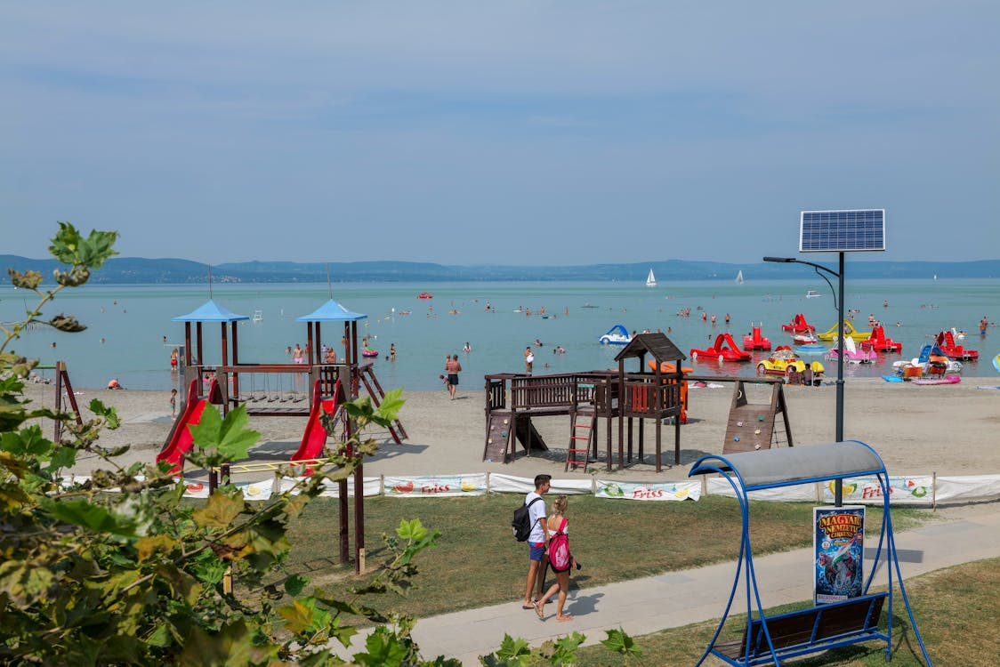
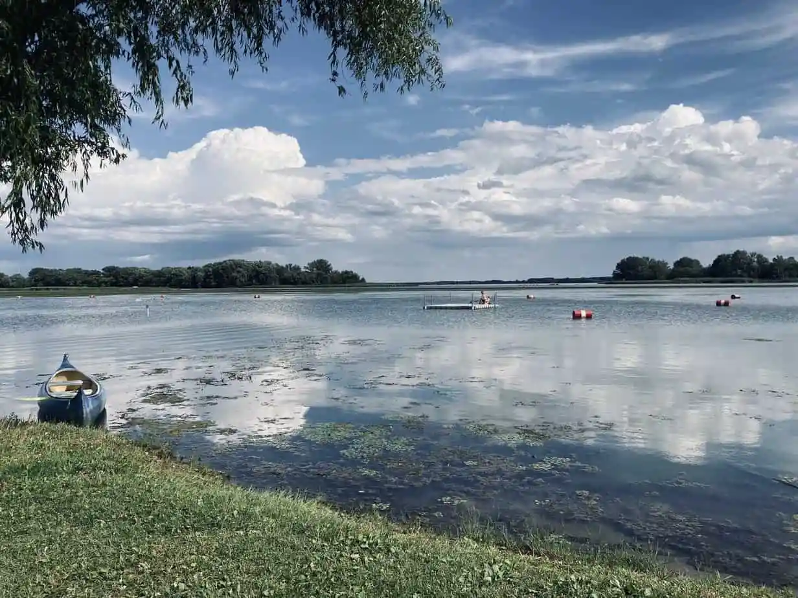
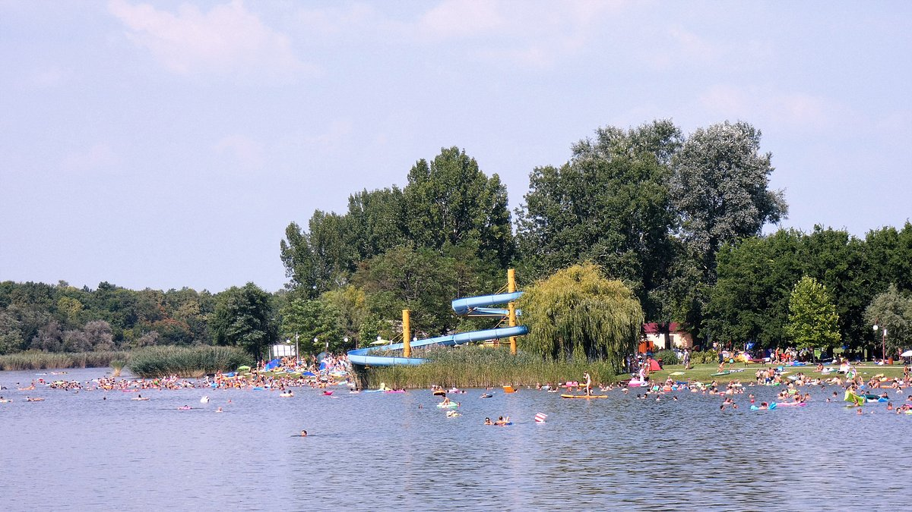

Balaton
A Balaton Közép-Európa legnagyobb édesvizű tava, Magyarország egyik legismertebb turisztikai célpontja. A "magyar tengerként" is emlegetik, különösen a nyári hónapokban népszerű a fürdőzni vágyók körében. A tó körül számos üdülőhely, strand és kemping található. A Balaton északi partja dombosabb, itt található például Tihany, a híres apátsággal. A déli part laposabb, és különösen kedvelt a családosok körében a sekély víz miatt. A tó nemcsak fürdőzésre alkalmas, hanem vitorlázásra, horgászásra és kerékpározásra is. A Balaton-felvidéki Nemzeti Park védi a környező táj természeti értékeit. A tó vízszintjét mesterségesen szabályozzák a Sió-csatornán keresztül. Télen a tó gyakran befagy, és akkor korcsolyázásra vagy jégvitorlázásra is lehetőséget nyújt. A Balaton kulturális programokkal, fesztiválokkal is vonzza a látogatókat.
Tisza-tó
A Tisza-tó Magyarország második legnagyobb tava, és egy mesterséges víztározó, amelyet a Tisza folyó felduzzasztásával hoztak létre. A tó Heves és Jász-Nagykun-Szolnok vármegyék határán fekszik. A 20. század második felében épült, eredetileg árvízvédelmi célokkal. Az évek során azonban egyedülálló ökológiai rendszer alakult ki benne, gazdag növény- és állatvilággal. A Tisza-tó különösen népszerű a horgászok, kenusok és madármegfigyelők körében. A vízterületet rengeteg sziget, holtág és nádas tagolja, így a vízitúrázás különösen izgalmas. A Poroszlón található Tisza-tavi Ökocentrum interaktív kiállításaival és akváriumaival várja a látogatókat. A tó strandjai is egyre népszerűbbek, különösen Abádszalók környékén. A Tisza-tónál figyelmet fordítanak a természetvédelemre, és szigorú szabályok vonatkoznak a vízi járművek használatára. A tó ideális célpont a nyugodtabb, természetközeli kikapcsolódást keresőknek.
Szelidi-tó
A Szelidi-tó Bács-Kiskun vármegyében található, Kalocsa közelében. Ez egy természetes eredetű tó, amely homokos partjával és tiszta vizével vonzza a látogatókat. A tó egyik különlegessége az enyhén sós vize, amely gyógyhatásúnak számít. A Szelidi-tó nem túl nagy, de a nyári időszakban rendkívül népszerű fürdőhely. A környező nádasok és erdők nyugodt, csendes légkört biztosítanak a pihenéshez. A tó körül kialakított sétányokon és tanösvényeken kellemes sétákat lehet tenni. A helyi madárvilág különösen gazdag, így a természetkedvelőknek is sok élményt nyújt. A Szelidi-tónál rendszeresen rendeznek kulturális és zenei programokat, például a Szelidi-tó Fesztivált. A környéken kerékpáros túraútvonalak is találhatók, így aktív kikapcsolódásra is van lehetőség. A Szelidi-tó ideális választás azoknak, akik kisebb, nyugodtabb üdülőhelyet keresnek a természet közelében.